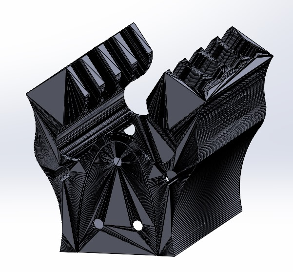
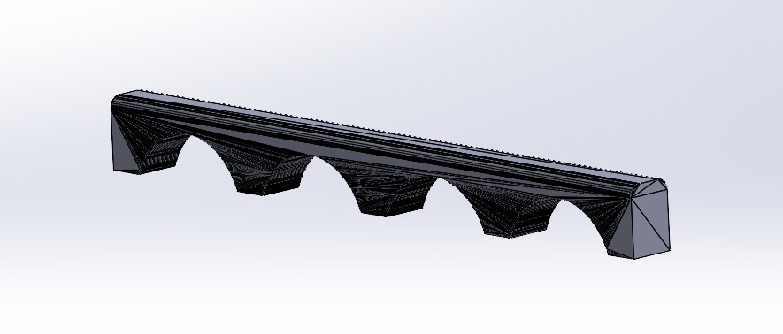
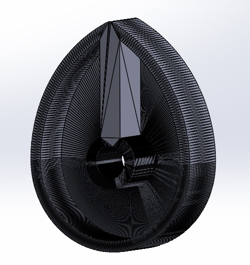
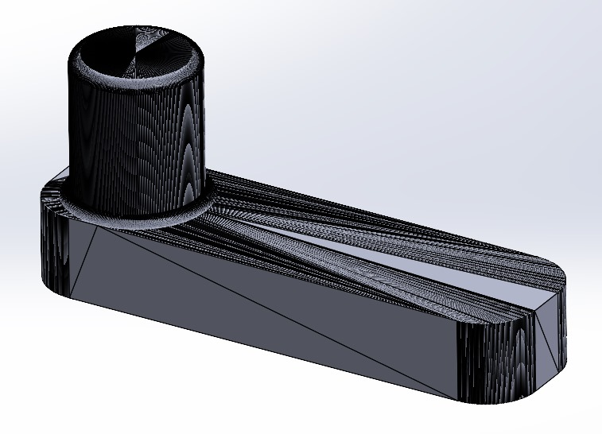
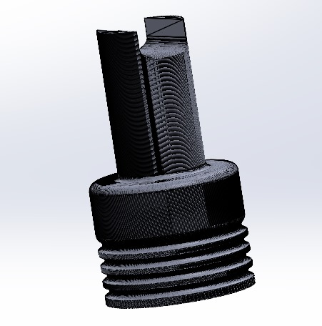
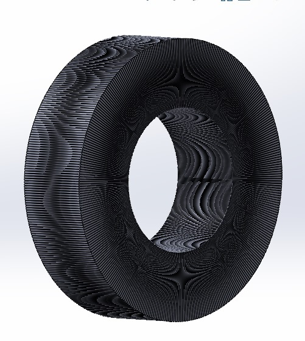

Resumen
Las piezas autómatas son elementos mecánicos diseñados para ejecutar movimientos repetitivos o tareas específicas de forma automática, usualmente sin la intervención directa de un operador humano. Estas piezas son fundamentales en diversos sistemas y máquinas, especialmente en áreas como la robótica, la automatización industrial y los juguetes mecánicos. Su funcionamiento se basa en principios de la mecánica, la cinemática y, en ocasiones, la electrónica.
Simulacion
El funcionamiento de las piezas autómatas está basado en la conversión y transmisión de energía mecánica.
En base a lo visto pude realizar un diseño de la parte de un coche, a continuacion les mostrare las piezas:
     Resultado
Conclusion
Las piezas autómatas representan un componente clave en la evolución de la tecnología mecánica y la automatización. Desde su origen en la antigüedad hasta su aplicación en sistemas modernos, han demostrado ser herramientas indispensables para simplificar tareas repetitivas, mejorar la precisión y optimizar procesos en diversos campos. Su capacidad para convertir y transmitir energía mecánica de manera eficiente las hace esenciales en industrias como la robótica, la manufactura y los sistemas de entretenimiento. Aunque enfrentan desafíos como el desgaste y la complejidad en su diseño, las piezas autómatas continúan siendo un puente entre la mecánica tradicional y la tecnología avanzada, marcando el camino hacia un futuro automatizado e innovador.
video de --> Piezas Automatas